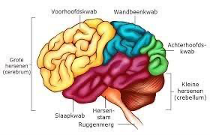
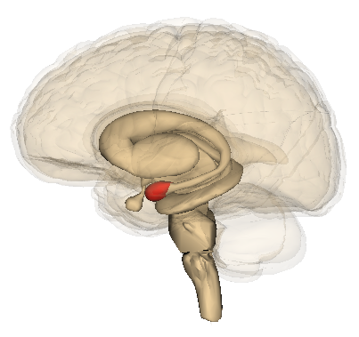
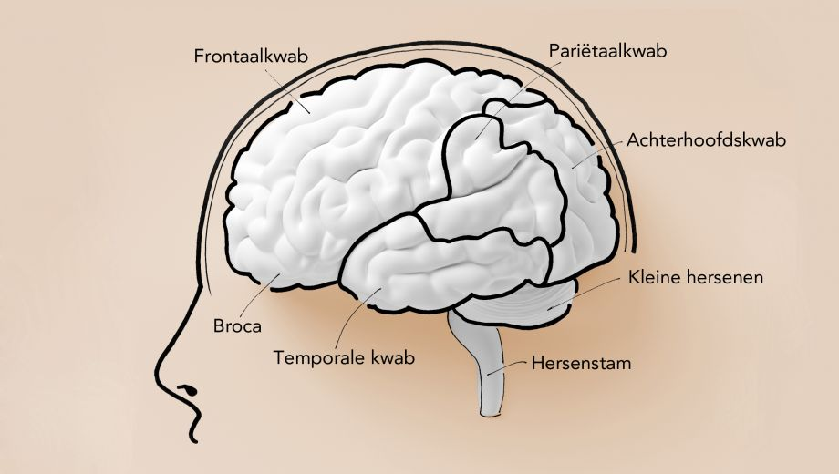
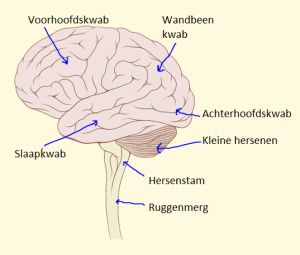
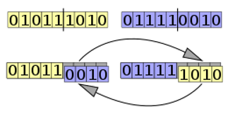

Technieken zoals neurale netwerken en genetische algoritmes laat zien dat de wetenschap inspiratie haalt uit de biologie. Zo kan je bijvoorbeeld een neuraal netwerk gelijkstellen aan het zenuwstelsel en de neuronen van een zenuw.
De menselijke hersenen zijn een deel van het centrale deel van het zenuwstelsel. De hersenen doen erg veel dingen tegelijk.
Ze nemen waar, controleren en verwerken de informatie.
Dagelijkse gewoontes worden opgenomen door de hersenen en gebeuren vaak automatisch. Denk hierbij aan een biologische wekker.
Maar hoe dat allemaal in de werking gaat, dat valt uit te leggen met kunstmatige intelligentie. De hersenen bestaan namelijk uit 2 soorten cellen.
De zenuwcellen en de gliacellen. De zenuwcellen zijn de neuronen in dit verhaal en geven dus informatie door aan andere zenuwcellen.
De gliacellen zorgen voor de stevigheid en het functioneren van het systeem.
Ze scheiden ook neuronen uit elkaar en verwijderen neurotransmitters die zijn vrijgekomen bij synaptische transmissies.
Daarnaast voorzien deze de zenuwcellen van voedingsstoffen.
Alleen de gliacel kan zelf geen informatie doorgeven. De gliacel zorgt er daarnaast wel voor dat de informatie wordt getransporteerd.
Hersenen zijn bij alle dieren anders, ze verschillen bij ieder organisme en sommige hebben helemaal geen hersenen.

Neem daarbij als voorbeeld de kwal. We focussen ons in dit hoofdstuk vooral op de hersenen van de mens.
De menselijke hersenen hebben veel gebieden die bij alles helpen van het waarnemen van objecten tot het bewegen van je eigen lichaam.
Dit gebeurt allemaal door signalen die van het ene gebied uit de hersenen naar het andere gebied gaat.
Wij focussen ons vooral op de voorhoofdskwab en de wandbeenkwab. Deze gedeelten van de hersenen gaan vooral over de intelligentie van de hersenen.
 De amandelkern bestaat uit neuronen. Deze kern is samen met andere delen van de hersenen een belangrijk circuit voor de verwerking van prikkels. De amandelkern legt verbanden tussen de informatie uit verschillende zintuigen en koppelt deze daarna aan emoties. De amandelkern kan ook informatie verwerken uit de gezichtsuitdrukkingen van soortgenoten.
De voorhoofdskwab, ook wel het frontaalkwab genoemd, is de grootste van de vier hersenkwabben.
De voorhoofdskwab is het meest geavanceerde deel van de hersenen en is daarom verantwoordelijk voor het gevoel van het menselijk zelfbewustzijn.
De voorhoofdskwab is betrokken bij veel belangrijke zaken waaronder:

- Plannen;
- Organiseren;
- Geheugen;
- Concentratie;
- Besluitvorming;
- Probleemoplossingen;
- Impulscontrole;
- Selectieve aandacht;
- De beheersing van je gedrag en emoties;
- Spraak en taal (vooral de linker frontale kwab).
Maar natuurlijk kan er ook iets mis gaan in de hersenen.
Dat kan bij de geboorte gebeuren of bij een ongeluk.
Als er iets mis gaat bij de voorhoofdskwab kan er veel misgaan.
De impulscontrole kan worden verstoord of je spieren kunnen uit zichzelf gaan bewegen.
De wandbeenkwab is een erg belangrijke kwab van de hersenen.  Het is de ontvanger van informatie die vanuit je zintuigen, zoals je mond, binnenkomen. Deze kwab is ook erg belangrijk voor logische principes. De functies van de wandbeenkwab zorgen er bijvoorbeeld voor dat je een langere aandachtsboog hebt. Deze kwab kan je helpen bij veel logische zaken zoals rekenen, lezen maar ook voor dingen zoals ruimtelijk inzicht.
In de hersenen zijn speciale zenuwen aanwezig waarmee het brein kan communiceren met het lichaam. De biologische naam van de hersenzenuwen is craniale zenuwen. De hersenzenuwen ontspringen uit de hersenen en de hersenstam, hierdoor worden ze onderscheiden met de andere zenuwen zoals bijvoorbeeld de zenuwen die uit het ruggenmerg lopen. De hersenzenuwen geven direct informatie door tussen het brein en alle andere delen van het lichaam. Hierbij geeft het vooral informatie door aan het hoofd en de nek omdat die dichtbij het brein in de buurt zitten, daardoor hoeven de impulsen niet helemaal door het perifere zenuwstelsel. Deze hersenzenuwen zijn symmetrisch. Dit betekent dat alle hersenzenuwen die ontstaan aan zowel de linker als de rechterkant van het lichaam ontstaan. Er zijn in totaal twaalf paar hersenzenuwen die zorgen voor de werking van verschillende delen van het lichaam. Alle hersenzenuwen hebben unieke eigenschappen qua grootte en wat ze doen.
Het zenuwstelsel bestaat uit verschillende delen en zenuwen. Zoals eerder al is gezegd bestaat het centrale zenuwstelsel zich uit de hersenen. Maar ook de hersenstam en het ruggenmerg. Maar het gehele zenuwstelsel bestaat uit twee delen. Het centrale deel en het perifere deel. De hersenen kunnen informatie wel ontvangen, verwerken en doorgeven. Maar ze kunnen het zelf niet gaan transporteren. Daar helpt het zenuwstelsel een handje mee.
Het centrale zenuwstelsel bestaat uit De hersenen, de hersenstam en het ruggenmerg. Al deze organen bevatten zenuwen die daar ontspringen en zijn erg belangrijk voor het ontvangen en verwerken van de informatie van de impulsen. De hersenen zijn het belangrijkste deel uit heel het zenuwstelsel maar zonder het perifere zenuwstelsel kan een impuls de hersenen niet bereiken.
Het perifere zenuwstelsel verbindt het centrale zenuwstelsel van en naar de organen en weefsels in je lichaam. Het perifere zenuwstelsel bestaat uit twee delen. Het somatische deel; de zenuwen van het hoofd, romp en de ledematen. En het autonoom zenuwstelsel. Dit zenuwstelsel reguleert over een groot aantal onbewuste bewegingen en acties. Het autonoom zenuwstelsel regelt vooral de werking van inwendige organen. Denk hierbij aan de ademhaling en de hartslag. Het somatische zenuwstelsel zorgt ervoor dat we bewuste waarnemingen en willekeurige bewegingen kunnen registreren. Hierbij zijn dus zintuigen, maar ook skeletspieren bij betrokken. Het somatische zenuwstelsel regelt bewegingen en houdingen die wij maken.
De zenuwcel speelt de belangrijkste rol in het zenuwstelsel. Deze bevat de informatie die de hersenen vervolgens moeten gaan verwerken. Deze informatie bestaat uit een elektrische lading. Een zenuwcel is een ingewikkelde cel waarvan we er zo ongeveer 100 miljard ervan hebben. Belangrijke onderdelen van deze cellen zijn het cellichaam, de axon en de dendrieten. Het cellichaam bestaat uit cytoplasma. Het cytoplasma is een vloeibare voedingsbodem waarin stoffen kunnen oplossen. De axonen zijn uitlopers van het cellichaam en verbinden die vaak aan de dendrieten van de zenuwcel. De dendrieten zijn vertakkingen van het cellichaam die signalen van andere zenuwcellen opvangen. Dit doen ze door het gebruik van synapsen. Synapsen zijn punten waar de ene zenuwcel kan communiceren met andere zenuwcellen.
De zenuwen spelen een grote rol in de zenuwstelsels. Een zenuw kan gezien worden als een snelweg voor zenuwcellen. Zenuwen zijn als miljoenen elektriciteitsdraadjes door je lichaam die tussen alle plekken verbinding leggen. Als er een schokje ontstaat aan de ene kant van het draad dan stroomt hij langzaam via het draad naar de hersenen. Een zenuw bevat zenuwvezels die kunnen verschillen tussen zenuwen. Er zijn twee verschillende soorten zenuwvezels: snelle en trage vezels. Bij snelle vezels worden de signalen sneller doorgegeven dan bij langzame vezels. De zenuwen geleiden dus de signalen uit de hersenen en het ruggenmerg naar de spieren en organen. Als een zenuw signalen geleid naar een spier hebben we het over een motorische zenuw. Je hebt ook nog sensorische zenuwen en hierbij worden de bewegingen van de motorische zenuw gecontroleerd. Als een zenuw beide doet noemt men dat een gemengde zenuw.
Maar wat is dan het verband tussen kunstmatige intelligentie en biologie? Globaal gekeken heeft biologie niet veel te maken met kunstmatige intelligentie. Maar als je er met een technisch perspectief naar gaat kijken dat kan je zien dat veel dingen bekend voorkomen. Dit komt namelijk omdat veel systemen in de hedendaagse techniek zijn geïnspireerd door het menselijke brein. We hebben u al geholpen door het eerst zenuwen elektriciteitsdraadjes te noemen, maar nu gaan we het verband duidelijker maken.
De hersenen regelen alles. Ze ontvangen informatie en verwerken het. De verwerkte informatie sturen ze vervolgens weer door.
Dit gebeurt in zeer korte tijd. Onze hersenen verwerken al die informatie heel snel en schrapt alles weg wat onmogelijk zou kunnen zijn tot hij op het juiste antwoordt komt.
Net zoals bijvoorbeeld een neuraal netwerk in kunstmatige intelligentie.
De hersenen hebben dan misschien geen layers om alles in te verwerken, maar alles in de hersenen heeft een bepaald doel.
In kunstmatige intelligentie en de hersenen is het concept van neuronen hetzelfde. Alleen in het geval van de hersenen worden die zenuwcellen genoemd.
Hierbij zijn neuronen bij allebei de systemen de deeltjes die informatie bevatten. Alleen dan is het bij kunstmatige intelligentie een getal tussen de 0 en de 1.
Bij de hersenen is het een elektrische schok. Ook het leren van de kunstmatige Intelligentie en het brein zijn te vergelijken.
In H3.5 heeft u veel verschillende manieren van digitaal leren ontdekt.
Het menselijke brein kan eigenlijk een beetje van allemaal, maar toch zijn onze hersenen het beste in reinforced learning.
Zoals al is gezegd werkt deze manier met de trial and error methode. En we leren tenslotte het meeste van onze fouten.
Ook voelen wij de beloning als we het goede antwoord achterhalen door middel van stoffen die vrij komen in ons lichaam.
In het lichaam wordt er via zenuwen informatie getransporteerd. Bij kunstmatige intelligentie werkt dat hetzelfde. Ook deze manier is weer te vergelijken met het menselijk lichaam. De informatie wordt via neuronen doorgegeven (zenuwcellen). Door de hidden layers en komt uiteindelijk bij de output layer uit. De informatie is dan verwerkt. De input layer met je zenuwen die prikkels van buitenaf ontvangt. De hidden layers de weg naar de hersenen toe. Uiteindelijk valt de output layer te vergelijken met de hersenen.
Om het kort te zeggen; genetische algoritmes kunnen gebruikt worden om oplossingen voor problemen waarbij de mens zelf geen mogelijk heeft om een oplossing voor te bedenken. Ze lossen deze problemen op door natuurlijke selectie toe te passen voor een aantal mogelijke antwoorden voor een gegeven probleem. Genetische algoritmes bestaan uit meerdere stappen. De populatie, generatie, natuurlijke selectie, crossover functie, mutatie en het altijd durende proces elitisme.
Een voorbeeld van zo’n probleem is bijvoorbeeld het aantal bagage dat je mag meenemen naar een vakantie in het buitenland.
Stel je voor dat je 5 kg aan bagage mag meenemen. Je hebt allerlei soorten voorwerpen zoals je laptop, tandenborstels, notitieboekje enzovoort. maar je wilt natuurlijk wel de beste keuze maken zodat je alles goed kan meenemen wat je nodig hebt en zoveel mogelijk. Dit is nog wel te doen voor het menselijk brein.
Het brein kan best goede keuzes maken met een klein aantal getallen die niet heel hoog of heel laag zijn. Maar als je bijvoorbeeld al uit 500 voorwerpen moet gaan kiezen, dan wordt het lastig. De tijd om het juiste antwoord te vinden stijgt samen met het aantal voorwerpen in een exponentiële manier. Zo’n soort probleem wordt ook wel een “knapsack problem” genoemd. Men onderzoekt al meer dan een centennium of er een algoritme is om zulke problemen snel en risicoloos op te kunnen lossen.
Er wordt dus wel onderzoek gedaan naar een beter algoritme, maar voor nu hebben we genetische algoritmes om deze problemen op te lossen. Dit doen ze door een populatie van mogelijke antwoorden om het probleem op te lossen. In ons geval zal dat dus de combinatie van voorwerpen zijn in onze bagage. Vervolgens geeft hij ieder voorwerp dan een binair nummer. Een 1 of een 0 dus en alle items met een 1 zitten dus in de bagage en alle met een 0 niet. De antwoorden die hier uitkomen, noemen ze een generatie. Dit is het begin van het evolutionaire keten en wordt dan ook dus generatie 0 genoemd. Daarna past dit algoritme een soort van natuurlijke selectie toe en wordt er een extra functie toegevoegd aan al die items. Die het de fitness functie en in ons geval telt die hoe zwaar ieder voorwerp is en hoe goed zo’n oplossing is. Als er oplossingen zijn die niet aan de eisen doen (zwaarder dan 5 kg), zal het genetische algoritme deze met het nummer 0 en is deze dus eigenlijk weggehaald.
Daarna selecteert het algoritme de “ouders” voor de volgende generatie. Zoals ook bij de natuur zijn de bagages met een hogere zwaarte (betere functie) eerder met elkaar gekruist om een nieuwe fitness functie te maken dan bijvoorbeeld een bagage van 1 kg en 2 kg.
Als de twee ouders zijn geselecteerd nemen we hun binaire nummer, knippen die door de helft op een willekeurige plek en verwisselen we het einden van hun nummer. Dit zorgt ervoor dat er twee nieuwe bagages ontstaan met verschillende gewichten voor de volgende generatie. Dit noemen we de Crossover Functie. Dit proces wordt dan opnieuw en opnieuw herhaald met generatie 0, tot we genoeg populatie hebben voor generatie 1.
Maar je zou zeggen dat we hiermee ook onze top opties vernietigen in de maak van een nieuwe generatie, omdat natuurlijk de natuurlijke selectie en de Crossover functie allebei willekeurig zijn. Daar hoeven we niet bang voor te zijn gelukkig, want bij genetische algoritmes is er ook nog een proces genaamd elitisme. Elitisme werkt eigenlijk heel simpel. Je neemt gewoon de twee beste van de vorige generatie en die doe je bij de volgende generatie. Tenslotte vindt er mutatie plaats bij de binaire getallen. Bij de Mutatie veranderen de “genen” van onze bagages in een manier die eerst niet mogelijk konden zijn met de 2 ouders. Er wordt dus een 1 of naar een 0 verandert of andersom. En dan is er weer een nieuwe Generatie. Dit algoritme houdt deze loop van oplossing aan totdat er een optimale oplossing is gevonden of tot het maximaal nummer van generaties is gevormd.
Hieronder zie je nog een afbeelding van de binaire code waar de crossover functie plaatsvindt.
